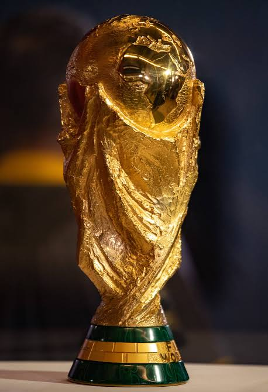

Toda imagem tem um autor. Dar crédito é respeito ao trabalho de quem produziu - e, em muitos casos, é obrigação legal.
Imagens usadas nesta galeria

-


- Prêmio mais cobiçado por seleções dos quatro cantos do planeta, o troféu da Copa do Mundo será entregue para a campeã no Catar 2022, em 18 de dezembro.(Edu Garcia/RJ)
- Torcida brasileira já começa na pré-venda dos ingressos (Foto/Tv Globo)
-Alguns jogadores da Seleção brasileira(Rafael Brito/CBF)
-Aerial view of Metlife Stadium in East Rutherford, New Jersey, on 20 January 2014
Anthony QuintanoSobre direitos autorais
Imagens encontradas na internet
Usar sem creditar não é economia de tempo - é apropriação do trabalho alheio